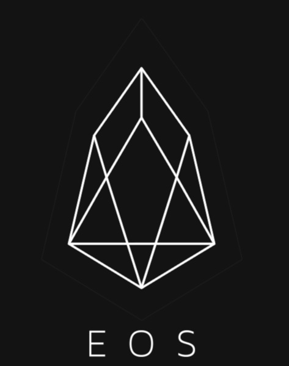

Présentation de 10 cryptomonnaies
L’Etherum
Tout d'abord, vous devez savoir que vos données en ligne et vos coordonnées sont stockées sur le
serveur. Ces serveurs sont les plus sécurisés et peuvent vous protéger. Cependant, le gouvernement
et diverses agences peuvent toujours accéder librement à vos informations. La seule chose qui peut
vraiment protéger vos informations est le système de stockage décentralisé
C'est là qu'Ethereum entre en jeu. Etherum est une technologie conçue pour améliorer l'efficacité du
stockage d'informations sensibles. Plus précisément, c'est l'intelligence artificielle
internationale qui stocke les données les plus importantes. En utilisant Etherum, vous achetez un
espace de stockage sécurisé, ce qui garantira la confidentialité des données.
Le Ripple
Ripple est une crypto-monnaie et un réseau de paiement en ligne. L'objectif principal de Ripple est
de libérer ses utilisateurs des services d'institutions tierces (comme les services bancaires en
ligne ou traditionnels). L'objectif principal de Ripple est de permettre à différents acteurs
financiers du monde entier de faire circuler les fonds de manière fluide.
Ripple, la société propose de convertir diverses devises en Ripple pour faciliter les transferts
dans le monde entier. Ces transferts peuvent être effectués à moindre coût en quelques secondes
seulement. Ripple est une crypto-monnaie acceptée par les banques. Cette fonctionnalité rend
certains investisseurs plus à l'aise.
Le Cardano
Cardano est une crypto-monnaie similaire à Etherum. Il s'agit donc d'un système de protection de la
sécurité des données dans une architecture virtuelle décentralisée. Aujourd'hui, il y a près de 30
milliards de Cardano en circulation sur le marché. Cela montre le bon état de la crypto-monnaie. Il
utilise la technologie Ouroboros comme algorithme de preuve de travail.
Puisque cardano est plus structurel, il prend particulièrement en charge l'infrastructure ADA.
Cependant, il est considéré comme une infrastructure de crypto-monnaie. C'est une valeur qui se
répand et se développe car les internautes soucieux de la sécurité des données sont très intéressés.
Le Litecoin
Il s'appelle le petit frère de Bitcoin. Le litecoin est également une crypto-monnaie qui fonctionne
sur un système peer-to-peer. Il a été lancé en 2011, et il est naturel d'utiliser la blockchain pour
circuler à l'international. Litecoin est connu pour sa vitesse de transaction. C'est l'une des
raisons qui l'ont poussé à entrer sur le marché commercial.
Le monde limite le nombre de Litecoins produits à 21 millions. Une fois ce nombre dépassé, seuls les
Litecoin mis sur le marché peuvent être mis en circulation. Cette rareté des produits est son
deuxième avantage. Le minage de Litecoin est très intéressant car il vous permet d'obtenir des
avantages similaires à l'exploitation de Bitcoin..
Le Nem
NEM est une crypto-monnaie qui était à l'origine destinée à être une branche de la crypto-monnaie
Nxt. Il a été publié pour la première fois dans la version la plus stable le 31 mars 2015. La
blockchain NEM utilise la technologie du système d'actifs intelligents. Il est fourni sous forme
open source. La blockchain NEM utilise une preuve d'importance pour la faire fonctionner.
La preuve d'importance ou POI est un algorithme conçu pour déterminer les membres de la blockchain
qui peuvent calculer le bloc suivant. POI utilise un système de partage des coûts sans tenir compte
de la prise en charge globale du réseau. Étant donné que NEM est une très grande plate-forme, elle
encourage les transactions entre différents types de crypto-monnaies.
Le Neo
NEO est une plateforme de stockage de données ouverte et gratuite. Contrairement à Ethereum, il
utilise d'autres codes de base. Dans le monde de la crypto-monnaie, il est considéré comme un
Ethereum chinois. L'objectif principal de NEO est de pouvoir stocker des contrats intelligents dans
un système open source totalement sécurisé.
NEO fournit des systèmes de stockage ou des portefeuilles accessibles sous Linux, Windows, Mac et
Android. Il vous suffit de télécharger le portefeuille pour stocker votre NEO. NEO est également
utilisé pour acheter du gaz ou du gaz NEO. Une caractéristique majeure de NEO est son
indivisibilité. Par conséquent, pour acheter NEO, vous devez investir dans des jetons.
Le Stellar
Stellar Lumens est une infrastructure décentralisée. Il a été créé pour prendre en charge diverses
devises. Il est placé en bourse et négocié dans toutes les devises et tous les actifs que les gens
veulent négocier. Impossible d'exploiter les lumens stellaires. Par conséquent, toutes les valeurs
qui composent la crypto-monnaie sont créées dès le début.
Le star system est très simple. En particulier, il peut convertir toutes les devises existantes très
rapidement et à faible coût. Après la conversion, les fonds seront envoyés rapidement conformément
aux exigences du système d'exploitation décentralisé. Pour la conversion, Stellar Lumens utilisera
le meilleur taux de change.
L'Iota
 IOTA est une crypto-monnaie inventée pour l'Internet des objets. Au lieu d'utiliser la blockchain,
il a utilisé l'intrication. Il permet une exécution gratuite des transactions et la transmission des
données est sécurisée. L'IOTA est principalement utilisé pour payer les objets connectés. Il a fait
de petits paiements en particulier.
IOTA est une crypto-monnaie inventée pour l'Internet des objets. Au lieu d'utiliser la blockchain,
il a utilisé l'intrication. Il permet une exécution gratuite des transactions et la transmission des
données est sécurisée. L'IOTA est principalement utilisé pour payer les objets connectés. Il a fait
de petits paiements en particulier.
Vous pouvez trouver IOTA sur Binance et Bitfinex. Vous pouvez acheter de la crypto-monnaie via des
liens de référence ou des liens directs. La Fondation IOTA coopère avec la plus grande base de
données de personnes disparues au monde. Ce type de relation de coopération avec REFUNITE confère
aux utilisateurs de hautes qualités humanistes.
L'Eos

EOS est une infrastructure similaire à la blockchain. Il est utilisé pour promouvoir des
applications décentralisées. Soutenir EOS est un DPoS ou une preuve d'équité confiée. Cette
crypto-monnaie vise à résoudre les problèmes d'évolutivité rencontrés au sein de la blockchain. Par
conséquent, il est proposé de permettre à plus d'utilisateurs d'entrer dans la blockchain.
EOS est également un centre pour fournir divers outils aux développeurs qui souhaitent créer des
bases de données, des systèmes d'authentification des droits et plus d'applications. Peut être
utilisé gratuitement. La vérification est effectuée de manière asynchrone avec EOS, ce qui permet de
prendre en charge un grand nombre de transactions.
Le Dash
Dash est une crypto-monnaie lancée en janvier 2014. La monnaie virtuelle prend en charge l'anonymat
des utilisateurs et les transactions instantanées. Par conséquent, contrairement aux transactions
Bitcoin enregistrées et transcrites sur la blockchain, toutes les transactions Dash sont effectuées
de manière anonyme. Le réseau de Masternodes décentralisé permet ces transactions anonymes.
Si une confirmation de transaction est effectuée sur le réseau Bitcoin après quelques minutes, la
confirmation est instantanée sur le réseau Dash. Dash est particulièrement apprécié pour sa
technologie qui promet l'anonymisation. Cependant, personne n'est vraiment sûr de son avenir, car
leur valeur changera à chaque minute comme Bitcoin.
Le Tron
Il s'agit d'un stockage distribué basé sur la technologie blockchain, qui peut créer un système de
diffusion de contenu plus libre et plus global prenant en charge TRON. Tout le monde peut utiliser
TRON pour stocker, publier ou distribuer des données. L'avantage de cette infrastructure de
crypto-monnaie est une stratégie décentralisée, qui peut sans aucun doute protéger les
données.
La monnaie officielle de TRON est TRONIX. Son unité de compte est TRX. Vous verrez cette unité dans
la liste des géants du trading. Si l'utilisateur décide de verrouiller son TRONIX, il doit utiliser
TRON Power ou TP. L'objectif ultime de TRON est de permettre à tous les utilisateurs de contrôler
pleinement leurs données sensibles, plutôt que de les transmettre à un tiers.